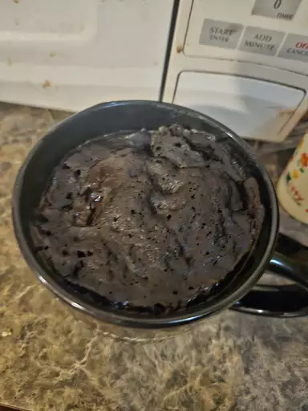

Home
Mug Cake!

This mug cake is a quick and easy dessert option. All my friends love it!
Ingredients
- 4 tablespoons all-purpose flour
- 4 tablespoons sugar
- 2 tablespoons cocoa powder
- 1/8 teaspoon baking powder
- 3 tablespoons milk
- 2 tablespoons vegetable oil
- 1/4 teaspoon vanilla extract
Instructions
- In a microwave-safe mug, mix the dry ingredients.
- Add the wet ingredients and stir until smooth.
- Microwave on high for 1 minute.
- Let it cool for a minute before eating.